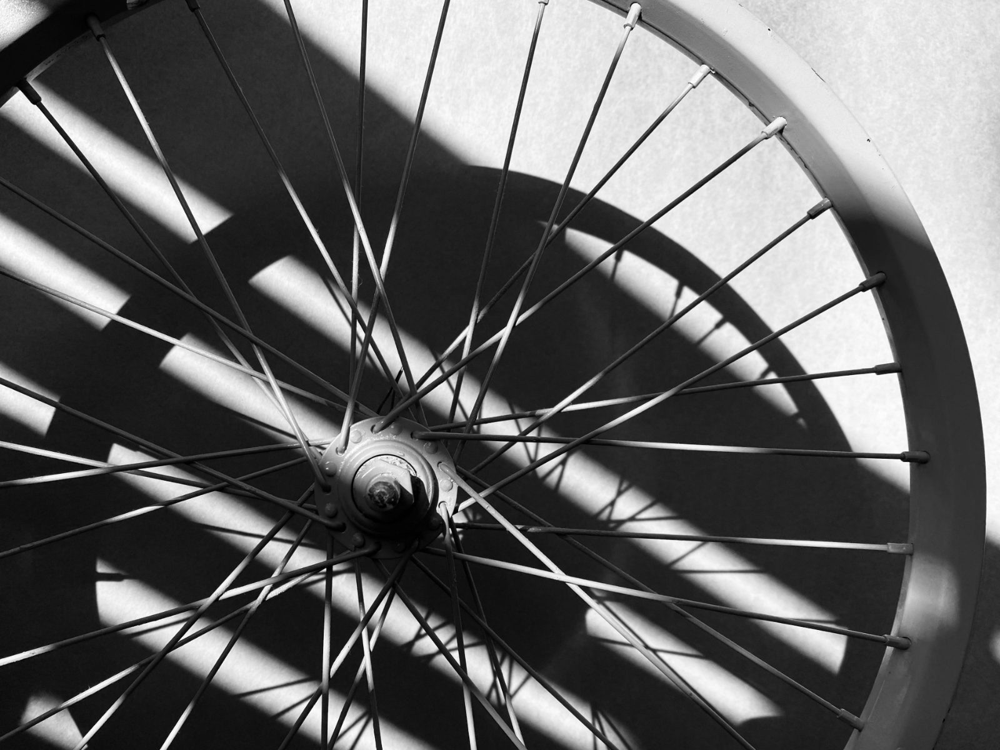

Calculator
Tyre pressure
Rear
83psi
5.7 bar
Front
53psi
3.6 bar
Working
How it is worked out
A starting point, not an answer. Ride it, then go 5 psi either way.
- Load on each wheel. Rider plus bike, 60 % on the rear and 40 % on the front, in pounds.
- Pressure for 15 % tyre drop. Frank Berto’s measurements, fitted as psi = 153.6 × load ÷ width1.5785 − 7.17.
- Surface. Worn road × 0.93, gravel × 0.85, mixed off-road × 0.78.
- Tubeless. × 0.92, because there is no tube to pinch.
- Limits. Never above the maximum printed on the tyre, and never above 72 psi (5 bar) on a hookless rim.
Check the limits printed on your tyre and rim. The lower of the two wins.
Next
Does the tyre fit the rim?
A 28 mm tyre on a 25 mm rim sits too square. The tyre and rim checker gives the range for your rim.
